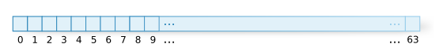
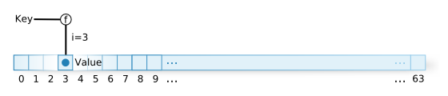
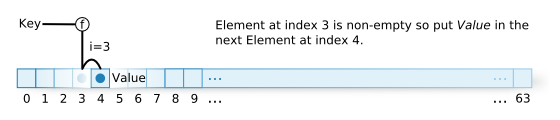
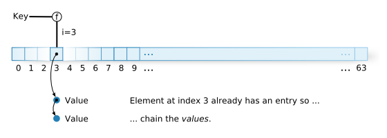
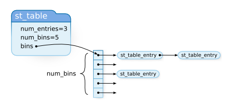

Ruby Hacking Guide
Translated by Clifford Escobar CAOILE
Chapter 3: Names and Name Table
st_table
st_table has already appeared several times as a method table and an instance
table. In this chapter let’s look at the structure of the st_table in detail.
Summary
I previously mentioned that the st_table is a hash table. What is a hash
table? It is a data structure that records one-to-one relations, for example, a
variable name and its value, or a function name and its body, etc.
However, data structures other than hash tables can, of course, record one-to-one relations. For example, a list of the following structs will suffice for this purpose.
struct entry {
ID key;
VALUE val;
struct entry *next; /* point to the next entry */
};
However, this method is slow. If the list contains a thousand items, in the worst case, it is necessary to traverse a thousand links. In other words, the search time increases in proportion to the number of elements. This is bad. Since ancient times, various speed improvement methods have been conceived. The hash table is one of those improved methods. In other words, the point is not that the hash table is necessary but that it can be made faster.
Now then, let us examine the st_table. As it turns out, this library is not
created by Matsumoto, rather:
▼ st.c credits
1 /* This is a public domain general purpose hash table package
written by Peter Moore @ UCB. */
(st.c)
as shown above.
By the way, when I searched Google and found another version, it mentioned
that st_table is a contraction of “STring TABLE”. However, I find it
contradictory that it has both “general purpose” and “string” aspects.
What is a hash table?
A hash table can be thought as the following: Let us think of an array with
n items. For example, let us make n=64 (figure 1).

Figure 1: Array
Then let us specify a function f that takes a key and produces an integer i
from 0 to n-1 (0-63). We call this f a hash function. f when given the
same key always produces the same i. For example, if we can assume that the
key is limited to positive integers, when the key is divided by 64, the
remainder should always fall between 0 and 63. Therefore, this calculating
expression has a possibility of being the function f.
When recording relationships, given a key, function f generates i, and
places the value into index i of the array we have prepared. Index access
into an array is very fast. The key concern is changing a key into an integer.

Figure 2: Array assignment
However, in the real world it isn’t that easy. There is a critical problem with
this idea. Because n is only 64, if there are more than 64 relationships to
be recorded, it is certain that there will be the same index for two different
keys. It is also possible that with fewer than 64, the same thing can occur.
For example, given the previous hash function “key % 64”, keys 65 and 129 will
both have a hash value of 1. This is called a hash value collision. There are
many ways to resolve such a collision.
One solution is to insert into the next element when a collision occurs. This is called open addressing. (Figure 3).

Figure 3: Open addressing
Other than using the array like this, there are other possible approaches, like using
a pointer to a respective linked list in each element of the array. Then when a
collision occurs, grow the linked list. This is called chaining. (Figure
4) st_table uses this chaining method.

Figure 4: Chaining
However, if it can be determined a priori what set of keys will be used,
it is possible to imagine a hash function that will never create
collisions. This type of function is called a “perfect hash function”.
Actually, there are tools which create a perfect hash function given a set
of arbitrary strings. GNU gperf is one of those. ruby‘s parser
implementation uses GNU gperf but… this is not the time to discuss it.
We’ll discuss this in the second part of the book.
Data Structure
Let us start looking at the source code. As written in the introductory
chapter, if there is data and code, it is better to read the data first.
The following is the data type of st_table.
▼ st_table
9 typedef struct st_table st_table;
16 struct st_table {
17 struct st_hash_type *type;
18 int num_bins; /* slot count */
19 int num_entries; /* total number of entries */
20 struct st_table_entry **bins; /* slot */
21 };
(st.h)
▼ struct st_table_entry
16 struct st_table_entry {
17 unsigned int hash;
18 char *key;
19 char *record;
20 st_table_entry *next;
21 };
(st.c)
st_table is the main table structure. st_table_entry is a holder that
stores one value. st_table_entry contains a member called next which of
course is used to make st_table_entry into a linked list. This is the chain
part of the chaining method. The st_hash_type data type is used, but I will
explain this later. First let me explain the other parts so you can compare
and understand the roles.

Figure 5: st_table data structure
So, let us comment on st_hash_type.
▼ struct st_hash_type
11 struct st_hash_type {
12 int (*compare)(); /* comparison function */
13 int (*hash)(); /* hash function */
14 };
(st.h)
This is still Chapter 3 so let us examine it attentively.
int (*compare)()
This part shows, of course, the member compare which has a data type of
“a pointer to a function that returns an int”. hash is also of the same type.
This variable is substituted in the following way:
int
great_function(int n)
{
/* ToDo: Do something great! */
return n;
}
{
int (*f)();
f = great_function;
And it is called like this:
(*f)(7);
}
Here let us return to the st_hash_type commentary. Of the two members
hash and compare, hash is the hash function f explained previously.
On the other hand, compare is a function that evaluates if the key is actually the
same or not. With the chaining method, in the spot with the same hash value
n, multiple elements can be inserted. To know exactly which element is
being searched for, this time it is necessary to use a comparison function
that we can absolutely trust. compare will be that function.
This st_hash_type is a good generalized technique. The hash table itself
cannot determine what the stored keys’ data type will be. For example, in
ruby, st_table’s keys are ID or char* or VALUE, but to write the
same kind of hash for each (data type) is foolish. Usually, the things
that change with the different key data types are things like the hash
function. For things like memory allocation and collision detection,
typically most of the code is the same. Only the parts where the
implementation changes with a differing data type will be bundled up into a
function, and a pointer to that function will be used. In this fashion, the
majority of the code that makes up the hash table implementation can
use it.
In object-oriented languages, in the first place, you can attach a procedure to an object and pass it (around), so this mechanism is not necessary. Perhaps it more correct to say that this mechanism is built-in as a language’s feature.
st_hash_type example
The usage of a data structure like st_hash_type is good as an
abstraction. On the other hand, what kind of code it actually passes
through may be difficult to understand. If we do not examine what sort of
function is used for hash or compare, we will not grasp the reality.
To understand this, it is probably sufficient to look at st_init_numtable()
introduced in the previous chapter. This function creates a table for
integer data type keys.
▼ st_init_numtable()
182 st_table*
183 st_init_numtable()
184 {
185 return st_init_table(&type_numhash);
186 }
(st.c)
st_init_table() is the function that allocates the table memory and so
on. type_numhash is an st_hash_type (it is the member named “type” of st_table).
Regarding this type_numhash:
▼ type_numhash
37 static struct st_hash_type type_numhash = {
38 numcmp,
39 numhash,
40 };
552 static int
553 numcmp(x, y)
554 long x, y;
555 {
556 return x != y;
557 }
559 static int
560 numhash(n)
561 long n;
562 {
563 return n;
564 }
(st.c)
Very simple. The table that the ruby interpreter uses is by and large
this type_numhash.
st_lookup()
Now then, let us look at the function that uses this data structure. First,
it’s a good idea to look at the function that does the searching. Shown below is the
function that searches the hash table, st_lookup().
▼ st_lookup()
247 int
248 st_lookup(table, key, value)
249 st_table *table;
250 register char *key;
251 char **value;
252 {
253 unsigned int hash_val, bin_pos;
254 register st_table_entry *ptr;
255
256 hash_val = do_hash(key, table);
257 FIND_ENTRY(table, ptr, hash_val, bin_pos);
258
259 if (ptr == 0) {
260 return 0;
261 }
262 else {
263 if (value != 0) *value = ptr->record;
264 return 1;
265 }
266 }
(st.c)
The important parts are pretty much in do_hash() and FIND_ENTRY(). Let us
look at them in order.
▼ do_hash()
68 #define do_hash(key,table) (unsigned int)(*(table)->type->hash)((key)) (st.c)
Just in case, let us write down the macro body that is difficult to understand:
(table)->type->hash
is a function pointer where the key is passed as a parameter. This is the
syntax for calling the function. * is not applied to table. In other words,
this macro is a hash value generator for a key, using the prepared hash
function type->hash for each data type.
Next, let us examine FIND_ENTRY().
▼ FIND_ENTRY()
235 #define FIND_ENTRY(table, ptr, hash_val, bin_pos) do {\
236 bin_pos = hash_val%(table)->num_bins;\
237 ptr = (table)->bins[bin_pos];\
238 if (PTR_NOT_EQUAL(table, ptr, hash_val, key)) {\
239 COLLISION;\
240 while (PTR_NOT_EQUAL(table, ptr->next, hash_val, key)) {\
241 ptr = ptr->next;\
242 }\
243 ptr = ptr->next;\
244 }\
245 } while (0)
227 #define PTR_NOT_EQUAL(table, ptr, hash_val, key) ((ptr) != 0 && \
(ptr->hash != (hash_val) || !EQUAL((table), (key), (ptr)->key)))
66 #define EQUAL(table,x,y) \
((x)==(y) || (*table->type->compare)((x),(y)) == 0)
(st.c)
COLLISION is a debug macro so we will (should) ignore it.
The parameters of FIND_ENTRY(), starting from the left are:
st_table- the found entry will be pointed to by this parameter
- hash value
- temporary variable
And, the second parameter will point to the found st_table_entry*.
At the outermost level, a do .. while(0) is used to safely wrap up a
multiple expression macro. This is ruby‘s, or rather, C language’s preprocessor
idiom. In the case of if(1), there may be a danger of adding an else part.
In the case of while(1), it becomes necessary to add a break at the very
end.
Also, there is no semicolon added after the while(0).
FIND_ENTRY();
This is so that the semicolon that is normally written at the end of an expression will not go to waste.
st_add_direct()
Continuing on, let us examine st_add_direct() which is a function that adds a
new relationship to the hash table. This function does not check if the key is
already registered. It always adds a new entry. This is the meaning of direct
in the function name.
▼ st_add_direct()
308 void
309 st_add_direct(table, key, value)
310 st_table *table;
311 char *key;
312 char *value;
313 {
314 unsigned int hash_val, bin_pos;
315
316 hash_val = do_hash(key, table);
317 bin_pos = hash_val % table->num_bins;
318 ADD_DIRECT(table, key, value, hash_val, bin_pos);
319 }
(st.c)
Just as before, the do_hash() macro that obtains a value is called here.
After that, the next calculation is the same as at the start of
FIND_ENTRY(), which is to exchange the hash value for a real index.
Then the insertion operation seems to be implemented by ADD_DIRECT().
Since the name is all uppercase, we can anticipate that is a macro.
▼ ADD_DIRECT()
268 #define ADD_DIRECT(table, key, value, hash_val, bin_pos) \
269 do { \
270 st_table_entry *entry; \
271 if (table->num_entries / (table->num_bins) \
> ST_DEFAULT_MAX_DENSITY) { \
272 rehash(table); \
273 bin_pos = hash_val % table->num_bins; \
274 } \
275 \
/* (A) */ \
276 entry = alloc(st_table_entry); \
277 \
278 entry->hash = hash_val; \
279 entry->key = key; \
280 entry->record = value; \
/* (B) */ \
281 entry->next = table->bins[bin_pos]; \
282 table->bins[bin_pos] = entry; \
283 table->num_entries++; \
284 } while (0)
(st.c)
The first if is an exception case so I will explain it afterwards.
(A) Allocate and initialize a st_table_entry.
(B) Insert the entry into the start of the list.
This is the idiom for handling the list. In other words,
entry->next = list_beg; list_beg = entry;
makes it possible to insert an entry to the front of the list. This is similar
to “cons-ing” in the Lisp language. Check for yourself that even if list_beg
is NULL, this code holds true.
Now, let me explain the code I left aside.
▼ ADD_DIRECT()-rehash
271 if (table->num_entries / (table->num_bins) \
> ST_DEFAULT_MAX_DENSITY) { \
272 rehash(table); \
273 bin_pos = hash_val % table->num_bins; \
274 } \
(st.c)
DENSITY is “concentration”. In other words, this conditional checks if the
hash table is “crowded” or not. In the st_table, as the number of values that
use the same bin_pos increases, the longer the link list becomes. In other
words, search becomes slower. That is why for a given bin count, when the average elements
per bin become too many, bin is increased and the crowding is reduced.
The current ST_DEFAULT_MAX_DENSITY is
▼ ST_DEFAULT_MAX_DENSITY
23 #define ST_DEFAULT_MAX_DENSITY 5 (st.c)
Because of this setting, if in all bin_pos there are 5 st_table_entries,
then the size will be increased.
st_insert()
st_insert() is nothing more than a combination of st_add_direct() and
st_lookup(), so if you understand those two, this will be easy.
▼ st_insert()
286 int
287 st_insert(table, key, value)
288 register st_table *table;
289 register char *key;
290 char *value;
291 {
292 unsigned int hash_val, bin_pos;
293 register st_table_entry *ptr;
294
295 hash_val = do_hash(key, table);
296 FIND_ENTRY(table, ptr, hash_val, bin_pos);
297
298 if (ptr == 0) {
299 ADD_DIRECT(table, key, value, hash_val, bin_pos);
300 return 0;
301 }
302 else {
303 ptr->record = value;
304 return 1;
305 }
306 }
(st.c)
It checks if the element is already registered in the table. Only when it is not registered will it be added. If there is a insertion, return 0. If there is no insertion, return a 1.
ID and Symbols
I’ve already discussed what an ID is. It is a correspondence between an
arbitrary string of characters and a value. It is used to declare various
names. The actual data type is unsigned int.
From char* to ID
The conversion from string to ID is executed by rb_intern(). This function
is rather long, so let’s omit the middle.
▼ rb_intern() (simplified)
5451 static st_table *sym_tbl; /* char* to ID */
5452 static st_table *sym_rev_tbl; /* ID to char* */
5469 ID
5470 rb_intern(name)
5471 const char *name;
5472 {
5473 const char *m = name;
5474 ID id;
5475 int last;
5476
/* If for a name, there is a corresponding ID that is already
registered, then return that ID */
5477 if (st_lookup(sym_tbl, name, &id))
5478 return id;
/* omitted ... create a new ID */
/* register the name and ID relation */
5538 id_regist:
5539 name = strdup(name);
5540 st_add_direct(sym_tbl, name, id);
5541 st_add_direct(sym_rev_tbl, id, name);
5542 return id;
5543 }
(parse.y)
The string and ID correspondence relationship can be accomplished by using the
st_table. There probably isn’t any especially difficult part here.
What is the omitted section doing? It is treating global variable names and
instance variables names as special and flagging them. This is because in the
parser, it is necessary to know the variable’s classification from the ID.
However, the fundamental part of ID is unrelated to this, so I won’t explain
it here.
From ID to char*
The reverse of rb_intern() is rb_id2name(), which takes an ID and
generates a char*. You probably know this, but the 2 in id2name is “to”.
“To” and “two” have the same pronounciation, so “2” is used for “to”. This
syntax is often seen.
This function also sets the ID classification flags so it is long. Let me
simplify it.
▼ rb_id2name() (simplified)
char *
rb_id2name(id)
ID id;
{
char *name;
if (st_lookup(sym_rev_tbl, id, &name))
return name;
return 0;
}
Maybe it seems that it is a little over-simplified, but in reality if we remove the details it really becomes this simple.
The point I want to emphasize is that the found name is not copied. The
ruby API does not require (or rather, it forbids) the free()-ing of the
return value. Also, when parameters are passed, it always
copies them. In other words, the creation and release is
completed by one side, either by the user or by ruby.
So then, when creation and release cannot be accomplished (when passed it is not returned) on a value, then a Ruby object is used. I have not yet discussed it, but a Ruby object is automatically released when it is no longer needed, even if we are not taking care of the object.
Converting VALUE and ID
ID is shown as an instance of the Symbol class at the Ruby level.
And it can be obtained like so: "string".intern. The implementation of
String#intern is rb_str_intern().
▼ rb_str_intern()
2996 static VALUE
2997 rb_str_intern(str)
2998 VALUE str;
2999 {
3000 ID id;
3001
3002 if (!RSTRING(str)->ptr || RSTRING(str)->len == 0) {
3003 rb_raise(rb_eArgError, "interning empty string");
3004 }
3005 if (strlen(RSTRING(str)->ptr) != RSTRING(str)->len)
3006 rb_raise(rb_eArgError, "string contains `\\0'");
3007 id = rb_intern(RSTRING(str)->ptr);
3008 return ID2SYM(id);
3009 }
(string.c)
This function is quite reasonable as a ruby class library code example.
Please pay attention to the part where RSTRING() is used and casted, and
where the data structure’s member is accessed.
Let’s read the code. First, rb_raise() is merely error handling so we ignore
it for now. The rb_intern() we previously examined is here, and also ID2SYM
is here. ID2SYM() is a macro that converts ID to Symbol.
And the reverse operation is accomplished using Symbol#to_s and such.
The implementation is in sym_to_s.
▼ sym_to_s()
522 static VALUE
523 sym_to_s(sym)
524 VALUE sym;
525 {
526 return rb_str_new2(rb_id2name(SYM2ID(sym)));
527 }
(object.c)
SYM2ID() is the macro that converts Symbol (VALUE) to an ID.
It looks like the function is not doing anything unreasonable. However, it
is probably necessary to pay attention to the area around the memory handling.
rb_id2name() returns a char* that must not be free(). rb_str_new2()
copies the parameter’s char* and uses the copy (and does not change the
parameter). In this way the policy is consistent, which allows the line to be
written just by chaining the functions.